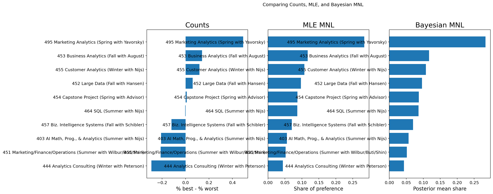

Counts, MLE, and Bayesian Estimation of the MNL Model
Author
Zeyu Fang
Published
June 8, 2026
Introduction
Best-Worst Scaling, often called MaxDiff, is a survey method for measuring relative preferences. Instead of asking respondents to rate every item on a numeric scale, MaxDiff repeatedly shows a small subset of items and asks the respondent to pick the best and the worst item from that set. This format is useful because people are usually much better at making trade-offs than at using rating scales consistently. A respondent may interpret a “7 out of 10” very differently from another respondent, but “best” and “worst” force a direct comparison.
In this assignment, the items are the core MSBA classes at UC San Diego Rady. The goal is to estimate which classes students prefer most and least using three different approaches. First, I compute a simple counts analysis based on how often each class is chosen best versus worst. Second, I estimate a multinomial logit (MNL) model by maximum likelihood. Third, I fit the same MNL model using Bayesian estimation with a random-walk Metropolis-Hastings sampler.
These three approaches answer slightly different questions. The counts analysis is descriptive: it asks which classes are chosen best more often than worst when they appear. The likelihood-based MNL model asks which latent utility values make the observed choices most probable. The Bayesian version asks how uncertainty about those utility values should be summarized after combining the likelihood with a prior. Looking at all three side by side is useful because it separates the broad preference signal from the modeling assumptions used to sharpen that signal.
I expect the broad ranking to be similar across all three methods. The counts analysis should give a quick descriptive summary, while the MNL methods should provide a more principled model-based ranking. The Bayesian version should be especially useful for uncertainty quantification, since posterior draws can be transformed directly into credible intervals for preference shares.
The raw file has one row per item shown on a task. Each row records the respondent ID, task number, slot position, item ID, and whether that item was chosen as best (Response = 1), worst (Response = -1), or neither (Response = 0).
The assignment description says each MaxDiff task should show 4 items and contain exactly one best pick, one worst pick, and two neutral rows. I therefore start with a sanity check and then restrict the analysis to tasks that match that standard MaxDiff structure.
task_size = raw.groupby(["Record ID", "Task"]).size()resp_check = raw.groupby(["Record ID", "Task"])["Response"].value_counts().unstack(fill_value=0)max_item = raw.groupby(["Record ID", "Task"])["ItemID"].max()valid_task = ( (task_size ==4)& (resp_check.get(1, 0) ==1)& (resp_check.get(-1, 0) ==1)& (resp_check.get(0, 0) ==2)& (max_item <=10))sanity_table = pd.DataFrame({"Quantity": ["Unique respondents in raw file","Tasks in raw file","Tasks matching standard MaxDiff structure","Share of tasks retained" ],"Value": [ raw["Record ID"].nunique(),len(task_size),int(valid_task.sum()),round(valid_task.mean(), 3) ]})sanity_table
After applying the sanity check, the usable MaxDiff sample contains respondents completing standard 4-item MaxDiff tasks across 10 classes. I also count how often each class is shown. A balanced MaxDiff design should expose each item roughly equally often.
The exposure counts are fairly even, which is reassuring. Balanced exposure matters because it makes the simple counts analysis more interpretable and reduces the risk that some items look popular merely because they were shown more often.
Counts Analysis
A simple way to summarize MaxDiff data is to compare how often each item is chosen as best versus worst, conditional on being shown. For item \(j\), define
A score near +1 means an item is almost always picked best when shown. A score near -1 means it is almost always picked worst. A score near 0 means the item sits near the middle of the preference ranking.
The counts analysis provides a very intuitive first look. The highest-scoring classes are the ones most often chosen as best when they appear, and the lowest-scoring classes are the ones most often chosen as worst. This method is fast and transparent, but it does not explicitly model the full choice process. It uses only the best and worst tallies and ignores the fact that every not-chosen item still contributed information by being available and not selected.
One advantage of the bootstrap intervals is that they make the descriptive ranking feel less brittle. If two classes have nearly identical counts scores and their intervals overlap substantially, I should avoid over-interpreting tiny rank differences. The counts analysis is therefore best understood as a descriptive first pass rather than a definitive model of latent utility.
counts_summary = pd.concat([ counts_rounded[["Label", "score"]].head(3).assign(group="Top 3 by counts"), counts_rounded[["Label", "score"]].tail(3).assign(group="Bottom 3 by counts")])counts_summary
Label
score
group
0
MGTA 495 Marketing Analytics (Spring with Yavo...
0.493
Top 3 by counts
1
MGTA 453 Business Analytics (Fall with August)
0.141
Top 3 by counts
2
MGTA 455 Customer Analytics (Winter with Nijs)
0.120
Top 3 by counts
7
MGTA 403 AI Math, Prog., & Analytics (Summer w...
-0.209
Bottom 3 by counts
8
MGTA 451 Marketing/Finance/Operations (Summer ...
-0.213
Bottom 3 by counts
9
MGTA 444 Analytics Consulting (Winter with Pet...
-0.292
Bottom 3 by counts
From MaxDiff Data to MNL Choices
The multinomial logit model treats each MaxDiff task as a choice problem. Suppose a task shows items \(\{a,b,c,d\}\) and the respondent chooses item \(b\) as best. The MNL probability of that best choice is
So each MaxDiff task contributes two MNL observations: one best pick from the full set and one worst pick from the remaining set.
An important identification issue is that only utility differences matter. If I added the same constant to every \(\beta_j\), the soft-max probabilities would not change. So one coefficient must be fixed as a reference. I normalize item 1 to have utility zero and estimate the remaining 9 coefficients.
The first bracketed term is the best-pick contribution, and the second is the worst-pick contribution conditional on the best pick already being removed.
This likelihood is attractive because it uses more of the design structure than the counts summary does. Every item shown in a task affects the denominator of a logit probability, so every appearance contributes information. The price of that additional structure is that there is no simple closed-form estimator, so I need numerical optimization.
The profile plot is not the full multivariate likelihood, but it is still useful. It shows the familiar shape of a well-behaved objective function: concave near the optimum and sharply worse as the parameter moves too far in either direction.
The MLE estimates tell a similar story to the counts analysis, but they are now grounded in an explicit model of the best-worst choice process. The estimated shares answer a clean counterfactual question: if all 10 classes appeared on a single screen, what fraction of choices would each class receive according to the fitted MNL model?
mle_summary = pd.concat([ mle_table_rounded[["Label", "share_mle"]].head(3).assign(group="Top 3 by MLE share"), mle_table_rounded[["Label", "share_mle"]].tail(3).assign(group="Bottom 3 by MLE share")])mle_summary
Label
share_mle
group
0
MGTA 495 Marketing Analytics (Spring with Yavo...
0.2839
Top 3 by MLE share
1
MGTA 453 Business Analytics (Fall with August)
0.1171
Top 3 by MLE share
2
MGTA 455 Customer Analytics (Winter with Nijs)
0.1072
Top 3 by MLE share
7
MGTA 403 AI Math, Prog., & Analytics (Summer w...
0.0556
Bottom 3 by MLE share
8
MGTA 451 Marketing/Finance/Operations (Summer ...
0.0520
Bottom 3 by MLE share
9
MGTA 444 Analytics Consulting (Winter with Pet...
0.0438
Bottom 3 by MLE share
MNL via Bayesian Estimation
For the Bayesian version, I use the same MNL likelihood and combine it with a weakly informative prior:
That prior is diffuse enough not to dominate the data, but it still regularizes the coefficients away from implausibly large values.
The posterior has no closed-form expression that I can sample from directly, so I use a random-walk Metropolis-Hastings algorithm. Starting from an initial parameter vector, the sampler proposes a nearby candidate, compares the posterior density of the proposal to the current state, and either accepts or rejects the move. Repeating this many times produces a Markov chain whose stationary distribution is the posterior.
An acceptance rate that is neither too low nor too high is usually a good sign in a random-walk Metropolis algorithm. If the acceptance rate were extremely low, the chain would be proposing jumps that are too large. If it were extremely high, the chain would be moving only in tiny steps and mixing inefficiently.
The traces should look like fuzzy caterpillars rather than slow drifts. That is the visual sign that the chain is exploring a stable posterior region instead of wandering toward a different part of the parameter space.
The posterior means should be close to the MLE estimates, because the prior is weak and the sample is reasonably informative. The main advantage of the Bayesian approach is that uncertainty on derived quantities, such as preference shares, comes almost for free. I simply compute the shares for every posterior draw and then summarize them with means and quantiles.
bayes_summary = pd.concat([ bayes_table_rounded[["Label", "share_post_mean", "share_ci_low", "share_ci_high"]].head(3).assign(group="Top 3 by posterior mean"), bayes_table_rounded[["Label", "share_post_mean", "share_ci_low", "share_ci_high"]].tail(3).assign(group="Bottom 3 by posterior mean")])bayes_summary
Label
share_post_mean
share_ci_low
share_ci_high
group
0
MGTA 495 Marketing Analytics (Spring with Yavo...
0.2835
0.2399
0.3327
Top 3 by posterior mean
1
MGTA 453 Business Analytics (Fall with August)
0.1173
0.0954
0.1413
Top 3 by posterior mean
2
MGTA 455 Customer Analytics (Winter with Nijs)
0.1077
0.0875
0.1311
Top 3 by posterior mean
7
MGTA 403 AI Math, Prog., & Analytics (Summer w...
0.0568
0.0446
0.0690
Bottom 3 by posterior mean
8
MGTA 451 Marketing/Finance/Operations (Summer ...
0.0519
0.0422
0.0631
Bottom 3 by posterior mean
9
MGTA 444 Analytics Consulting (Winter with Pet...
0.0434
0.0353
0.0530
Bottom 3 by posterior mean
Comparing the Three Methods
Now I combine the counts, MLE, and Bayesian results into one comparison table.
UserWarning: Tight layout not applied. tight_layout cannot make axes width small enough to accommodate all axes decorations
plt.tight_layout()

The three methods should agree most strongly at the top and bottom of the ranking. That is where the data contain the clearest signal. Any disagreement should mostly appear in the middle, where several classes have similar utility and small amounts of sampling noise can reshuffle the order.
rank_compare = pd.DataFrame({"Pair": ["Counts vs MLE","Counts vs Bayes","MLE vs Bayes" ],"Spearman correlation": [ comparison[["counts_rank", "mle_rank"]].corr(method="spearman").iloc[0, 1], comparison[["counts_rank", "bayes_rank"]].corr(method="spearman").iloc[0, 1], comparison[["mle_rank", "bayes_rank"]].corr(method="spearman").iloc[0, 1] ]}).round(3)rank_compare
What does the MNL add over the counts analysis? It uses the full choice structure of the MaxDiff task. Every shown item contributes information, not just the items that were explicitly selected. What does Bayes add over MLE? It makes uncertainty for derived quantities especially convenient: once I have posterior draws for the utilities, I can transform every draw into shares and compute credible intervals directly.
Discussion
Substantively, the results summarize which MSBA classes students in this survey find most attractive and least attractive. The broad ranking is stable across all three methods, which makes the main conclusions more credible than if the ranking changed dramatically across approaches. The top classes appear genuinely popular, while the bottom classes are consistently less preferred.
Methodologically, each approach has a different role. The counts analysis is the quickest descriptive summary and would work well in a dashboard or a first-pass memo. The MLE MNL model is better when I want a rigorous model-based estimate with classical standard errors. The Bayesian MNL model is best when I care about uncertainty for nonlinear quantities like preference shares or if I wanted to extend the model further, for example to a hierarchical version with respondent-level heterogeneity.
There are also important caveats. The sample is a self-selected group of MSBA students rather than a representative sample of all possible students. Preferences may reflect when a course is taken, who teaches it, current workload, or what respondents have already completed in the program. If I had more time, I would explore respondent-level heterogeneity and check whether first-year and later-stage students rank the classes differently.
A second limitation is that the MNL model imposes the independence-of-irrelevant-alternatives structure and assumes homogeneous preferences across respondents. Those assumptions are useful for a first pass because they keep the model interpretable and computationally manageable, but they are still simplifications. In a richer project, I would want to compare these results to a hierarchical Bayes or mixed logit specification that allows utilities to vary across people.
Conclusion
This assignment showed how the same MaxDiff data can be analyzed at three different levels of sophistication. The counts analysis provided a simple and transparent summary of which classes were chosen best more often than worst. The maximum-likelihood MNL model turned those same data into estimated latent utilities and implied preference shares. The Bayesian MNL model delivered a very similar ranking while adding a direct way to quantify posterior uncertainty.
The most reassuring result is that the broad story is stable across methods. The classes that look strong in the raw counts also tend to rank highly in the MLE and Bayesian models, and the least-preferred classes remain near the bottom across specifications. That consistency suggests the underlying preference signal is real rather than an artifact of any one estimation approach.
From a learning perspective, this was also the most valuable part of the exercise. Writing the likelihood directly makes the logic of the MNL model much clearer than just calling a black-box estimator. Writing the MCMC sampler makes Bayes feel procedural rather than mysterious. Even if the code is not elegant, building it from scratch makes the estimation process much easier to understand and explain.